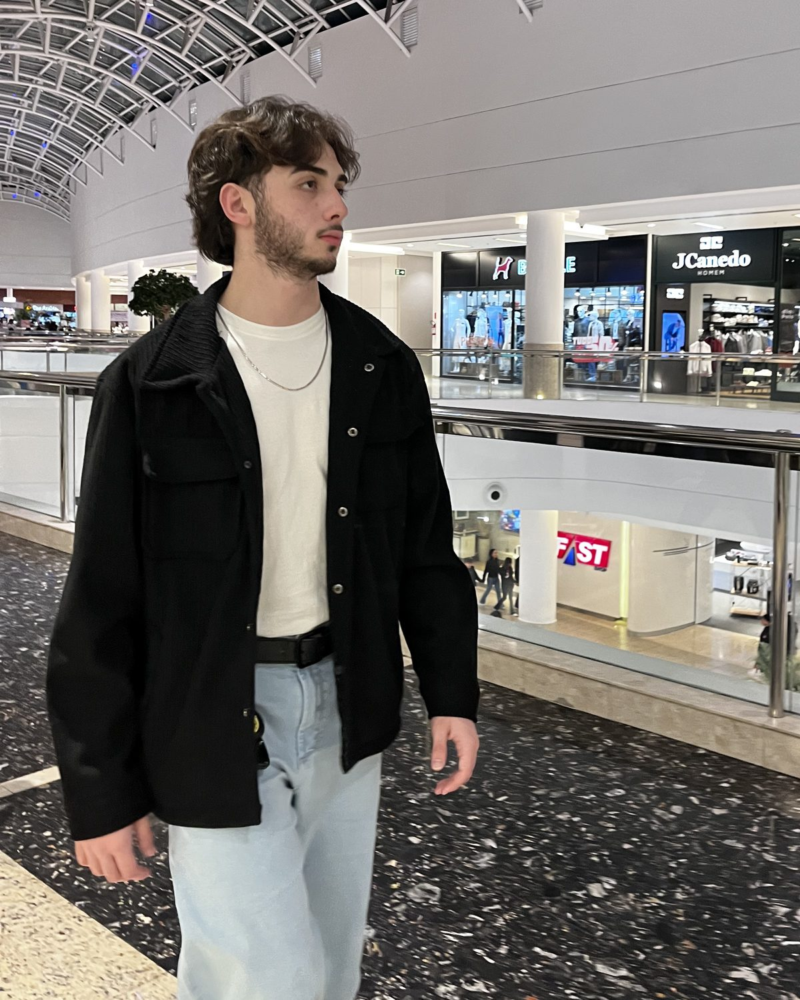

José Marques
Trabalho com back-end e dados: sistemas que precisam rodar todos os dias sem ninguém olhando.
A maior parte do que faço é integração: fazer conversar sistemas que não foram feitos para isso, e deixar o número certo na tela de quem precisa decidir. Comecei em Java, em 2024, e passei para Python no início de 2026 — hoje é Python e SQL. O trabalho de verdade é o que vem depois: fila, retentativa, log, o dia em que a API do outro lado cai.
Entrei na faculdade em 2026. No começo do segundo semestre abri a No Fear, para levar esse trabalho até o fim com as empresas que me procuram — hoje respondo por ela como fundador e gerente de equipe, sem sair do back-end. Antes disso foram dois anos de estudo e de projetos que ninguém pediu; boa parte deles está no índice.

A No Fear
Sistemas de gestão, integrados a business intelligence
A No Fear é especializada em sistemas de gestão: assumir o sistema interno que a planilha não aguenta mais. Cada um sai integrado a um sistema de business intelligence — o dado que a operação registra é o mesmo que aparece no painel de quem decide, sem exportação no meio do caminho. Escopo fechado, entrega em partes, código no repositório do cliente.
Ver a No Fear